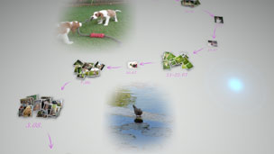

Возможности Photo Gallery
У программы Photo Gallery много полезных функций.
Просмотр снимков по событиям
При запуске программы Photo Gallery все фотографии, сохраненные на системном накопителе системы PS3™, будут автоматически проанализированы и сгруппированы "по событиям" на основе данных о времени съемки. Экран, на котором фотографии отображены как "события", называется [Область библиотеки].

Организация фотографий
Фотографии можно сгруппировать по разным признакам – например, по дате и времени съемки, по количеству людей на снимках или даже по выражению лица людей на фото. Сгруппировав снимки, вы можете разбить каждую группу на более мелкие – например, выделить в какой-нибудь группе снимков отдельную подгруппу, в которой будут только фотографии улыбающихся детей.
Создание Список воспроизведения избранных фотографий
Вы можете создать список воспроизведения, выбрав отдельные фотографии или группу, созданную с помощью предыдущей функции -  (Группировать). Созданные вами списки воспроизведения отображаются в [Область списка воспроизведения].
(Группировать). Созданные вами списки воспроизведения отображаются в [Область списка воспроизведения].